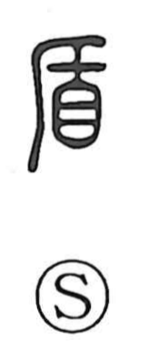

盾

Kun: tate | On: jun
shield
Explanation
A pictograph of a shield held up before the eyes. The upper part portrays the act of lifting the shield to shade and protect the body. Early writers distinguished shields by shape and decoration that reflected tribal styles: 干 shows a rectangular shield, 單 (単) an oval shield with a pair of ornaments at the top, and 周 a square shield covered in an all-over pattern. The well-known Chu anecdote about a merchant who boasted of spears that could pierce anything and shields that nothing could pierce—stumped when asked what would happen if his own spear struck his shield—gave rise to the compound 矛盾, meaning contradiction.